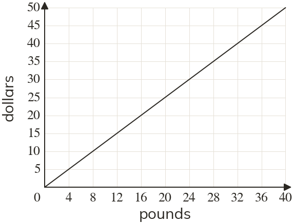

Westonbirt Maths · Direct and Inverse Proportion
Graphs of Proportion
Name: ______________________ Date: ____________
1
The graph converts pounds to dollars. Use it to convert to dollars.

2
Use the same graph to convert to pounds.
3
On a pounds-to-dollars graph, Raj converts to pounds by starting at on the pounds axis. What is his mistake?
4
The graph shows
Convert to pounds, which is off the graph.
Convert to pounds, which is off the graph.
5
The graph uses
Check your reading for by calculation.
Check your reading for by calculation.
Ext
A graph converting km to miles is a straight line through and
a) Is it a direct proportion?
b) Find
c) Convert km.
a) Is it a direct proportion?
b) Find
c) Convert km.